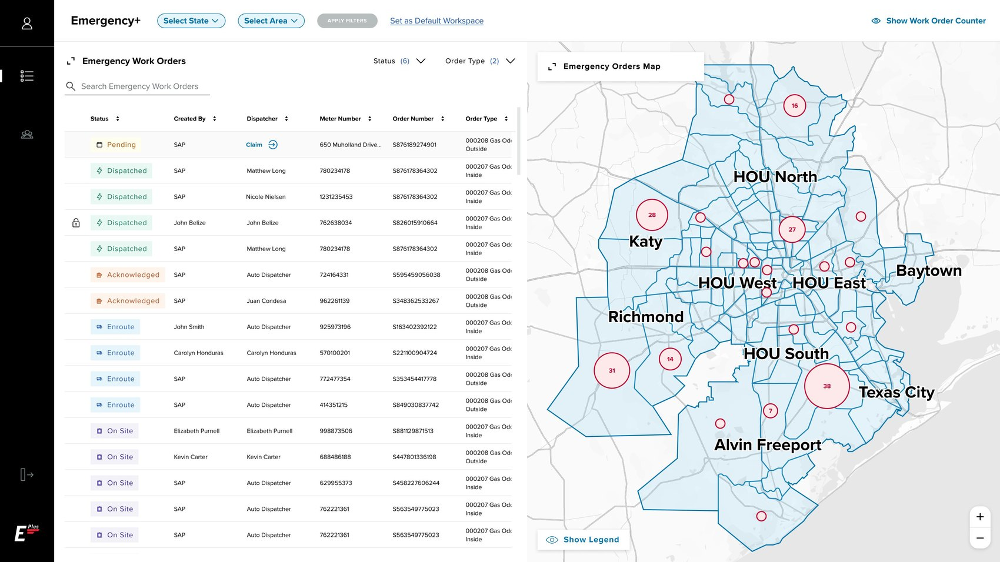
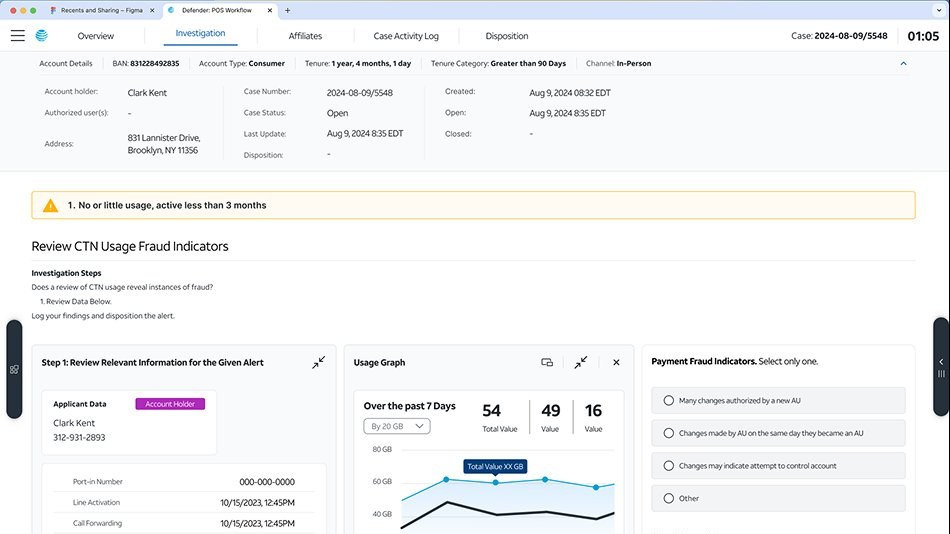

Agentic Marketing
Intelligence
A fully agentic workflow taking data insights to complete campaign briefs in minutes — built end-to-end with Claude Code on AT&T's design system.
View project ↗
_Credera · Brooklyn, NY
I design clarity into large, complex, ambiguous systems — from data analytics to enterprise tools to agentic AI.
A fully agentic workflow taking data insights to complete campaign briefs in minutes — built end-to-end with Claude Code on AT&T's design system.
View project ↗20+ minutes to under 2. Seven tools consolidated into one. Auto-dispatch now handles 80% of emergency work orders.
View project ↗
A complete overhaul of AT&T's internal hardware-fraud tooling, with a workflow editor built to adapt as threats evolve.
View project ↗
A few notes from the teammates, leads, and partners I've worked alongside — across AT&T, CenterPoint Energy, and beyond.
From the start, Bruno impressed me with how much he listened to dispatchers and supervisors — what frustrated them, what would make their jobs easier. Users felt heard, and it made our solutions so much stronger. Dispatchers were genuinely excited to use what we built.
His first billable day was day one of our week-long client workshop — and by the second or third day he was facilitating a segment himself. He navigates ambiguity with ease, connected instantly with both our internal team and the client, and structured the Figma so the whole team could move faster.
Bruno's ability to get up to speed quickly is unparalleled. He's been a true thought partner — bringing innovative solutions and solving client needs rather than just following instructions. I'd highly recommend working with him again. 10/10.
Bruno was asked to flex across product teams after a designer left. He took it in stride and was a total team player — getting up to speed quickly and immediately taking on high-priority work. I really appreciate his attitude and willingness to do whatever was needed.
His first week was our week-long design workshop, and he showed no sign it was his first week — he carried himself like a seasoned professional onboarded weeks earlier. His positive attitude and ability to seamlessly integrate feedback make him a dream collaborator. His work continues to set a high standard.
He's grown into a confident presence with clients — presenting to senior leaders and folding their feedback into the work seamlessly. He turns complex data into clear, compelling designs that keep stakeholders aligned and moving in the same direction.
Bruno's attention to detail is second to none — every aspect of the design was meticulously thought out and executed perfectly. He picked up an intricate fraud case-management system fast and made real-time edits during the workshop. His positive attitude and humor were a real boost to the team.
He's more than happy to step up and lead client discussions and get the team the clarity it needs. He has great instincts for when to make edits in real time versus take feedback, adjust, and bring back an update — and his Figma was so well organized the whole team could find anything fast.